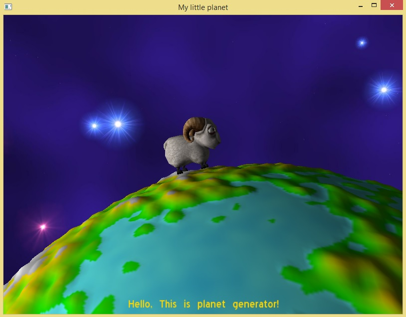
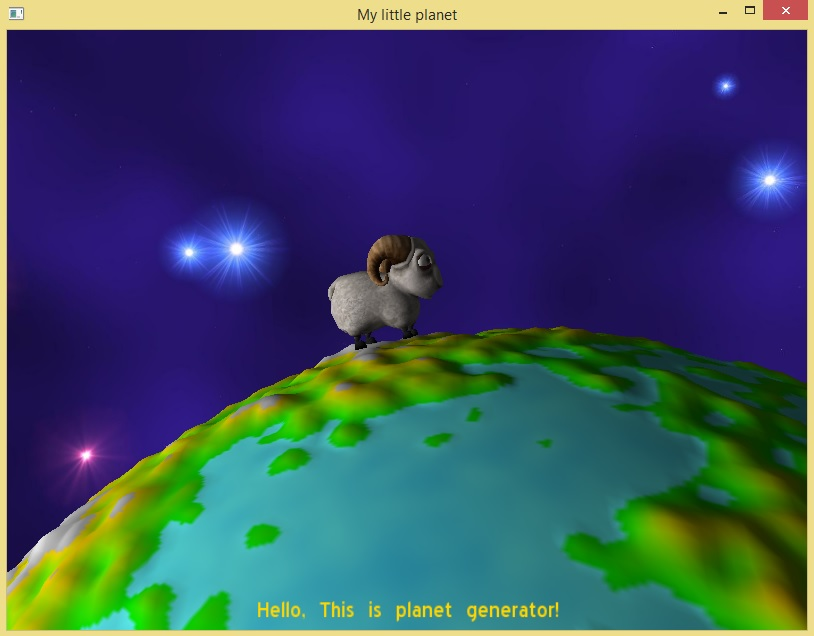

Try the executable project.
You can try the executable project (on Windows). Linux users can build the project with make (make files come with the code). The executable project provides a graphical user interface to help setting all the fundamental parameters. Anyway the exexutable project doesn't provide all the features present in the code, since it has been thought just as starting point for those who want to work with this project. Download and run PlanetGenerator.
- Choose the size of the planet.
- Seed is a unique number which identifies the land shape. The same seed gives always the same land shape (exception for different operative systems).
- Percentage of surface covered by the water (or any liquid depending on the chosen color).
- Choose the color for water (liquid part), terrain and mountains.
- Choose frequency and amplitude (see simplex noise). It affects the shape of the planet.
- Preview of the 2D map of the planet.
- Set size and the kind of 2D map (eqirectangolar or cube) and save the image (.pmg)
- Import a .mesh file and put on the planet's surface.
- Export the planet in a mesh file.
Put objects on the planet.
You can put any .mesh object on the planet. You can create these with any modelling tool, like Blender. The .mesh files have to be put in the "/media/models" folder. If there are any material (.material) and texture (.jpg, .png, etc.) files, these go respectively in the "/media/materials/script" and "/media/materials/textures" folders. All the files contained in "/media" folder and subfolders is automatically loaded in the beginning. You can choose how many objects of each kind to put on the planet, and an automatic name will be given to those. Objects are put in random positions.
This project already provides two 3D objects. The first represents a ram. The second represents an asteroid.
 
Choose and move objects.
Objetcts put on the planet can also be selected and moved. Here's the list of buttons which can permit to interact with the objects:
- "o": select next object. The name of the selected object appears in the bottom of the window.
- "u": select previous object. The name of the selected object appears in the bottom of the window.
- "i": move the selected object up.
- "k": move the selected object down.
- "l": move the selected object to the right.
- "j": move the selected object to the left.
View mode
There are 3 different way to view the planet: "texture view", "line view" and "vertex view". This can be changed pressing the button "r".
Additionally, pressing the button "f" it's possible to show/hidden an overlay containing the following information:
- Current fps
- Average fps
- Worst fps
- Best fps
- Triangle count